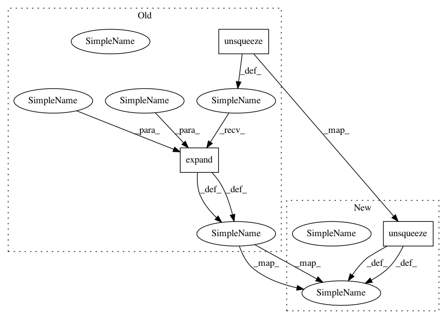

4fa9abb648cebe9425250181bdce2bbf805aa7fe,onmt/decoders/transformer.py,TransformerDecoder,forward,#TransformerDecoder#,218
Before Change
src_memory_bank = memory_bank.transpose(0, 1).contiguous()
padding_idx = self.embeddings.word_padding_idx
src_pad_mask = src_words.data.eq(padding_idx).unsqueeze(1) \
.expand(src_batch, tgt_len, src_len)
tgt_pad_mask = tgt_words.data.eq(padding_idx).unsqueeze(1) \
.expand(tgt_batch, tgt_len, tgt_len)
if self.state["cache"] is None:
After Change
src_memory_bank = memory_bank.transpose(0, 1).contiguous()
padding_idx = self.embeddings.word_padding_idx
src_pad_mask = src_words.data.eq(padding_idx).unsqueeze(1)
tgt_pad_mask = tgt_words.data.eq(padding_idx).unsqueeze(1)
if self.state["cache"] is None:
saved_inputs = []
In pattern: SUPERPATTERN
Frequency: 3
Non-data size: 3
Instances
Project Name: OpenNMT/OpenNMT-py
Commit Name: 4fa9abb648cebe9425250181bdce2bbf805aa7fe
Time: 2018-11-29
Author: guillaume.klein@systrangroup.com
File Name: onmt/decoders/transformer.py
Class Name: TransformerDecoder
Method Name: forward
Project Name: OpenNMT/OpenNMT-py
Commit Name: 4fa9abb648cebe9425250181bdce2bbf805aa7fe
Time: 2018-11-29
Author: guillaume.klein@systrangroup.com
File Name: onmt/encoders/transformer.py
Class Name: TransformerEncoder
Method Name: forward